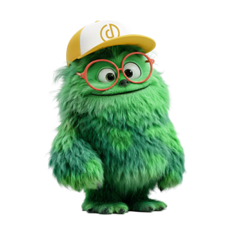

🔑 Voer je Anthropic API-sleutel in
De sleutel wordt alleen in jouw browser bewaard (localStorage) en nooit ergens naartoe gestuurd.
Sleutel ophalen via console.anthropic.com
Coco maakt een concept van max. 500 woorden, in jouw stijl, vaak rond één metafoor.
Coco is aan het schrijven… even geduld 🪶
— of —
🎉 Top! Hier is je definitieve column.